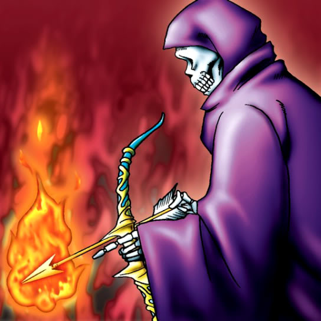

Fire Reaper

Description: "When this card is flipped face-up, all cards located in Meadow terrain are destroyed."
STATS
ATK: 700
DEF: 500DECK COST
Deck Cost per Card: 17EFFECT NOT IMPLEMENTED
Fusion List (72 Possible Fusions)
- Fire Reaper + Abyss Flower = Wood Remains
- Fire Reaper + Akakieisu = Magical Ghost
- Fire Reaper + Ancient Jar = Stone Ghost
- Fire Reaper + Arlownay = Wood Remains
- Fire Reaper + Armaill = Zombie Warrior
- Fire Reaper + Armed Ninja = Zombie Warrior
- Fire Reaper + Axe Raider = Flame Swordsman
- Fire Reaper + Barrel Lily = Pumpking the King of Ghosts
- Fire Reaper + Boo Koo = Magical Ghost
- Fire Reaper + Candle of Fate = Flame Ghost
- Fire Reaper + Celtic Guardian = Armored Zombie
- Fire Reaper + Curtain of the Dark Ones = Magical Ghost
- Fire Reaper + Darkworld Thorns = Pumpking the King of Ghosts
- Fire Reaper + Doron = Zombie Warrior
- Fire Reaper + Dragon Zombie = Skelgon
- Fire Reaper + Droll Bird = Mavelus
- Fire Reaper + Fiend's Hand = Flame Ghost
- Fire Reaper + Fiend Sword = Armored Zombie
- Fire Reaper + Fire Eye = Flame Ghost
- Fire Reaper + Fire Reaper = Flame Ghost
- Fire Reaper + Firegrass = Wood Remains
- Fire Reaper + Flame Manipulator = Magical Ghost
- Fire Reaper + Flame Snake = Flame Ghost
- Fire Reaper + Flower Wolf = Flame Cerebrus
- Fire Reaper + Garvas = Flame Cerebrus
- Fire Reaper + Graveyard and the Hand of Invitation = The Snake Hair
- Fire Reaper + Griggle = Wood Remains
- Fire Reaper + Guardian of the Labyrinth = Zombie Warrior
- Fire Reaper + Haniwa = Stone Ghost
- Fire Reaper + Hard Armor = Zombie Warrior
- Fire Reaper + Hurricail = Magical Ghost
- Fire Reaper + Hyo = Zombie Warrior
- Fire Reaper + Kagemusha of the Blue Flame = Zombie Warrior
- Fire Reaper + Kurama = Mavelus
- Fire Reaper + Little Chimera = Flame Cerebrus
- Fire Reaper + Left Arm of the Forbidden One = Magical Ghost
- Fire Reaper + M-Warrior #1 = Zombie Warrior
- Fire Reaper + M-Warrior #2 = Zombie Warrior
- Fire Reaper + Mammoth Graveyard = Great Mammoth of Goldfine
- Fire Reaper + Man Eater = Wood Remains
- Fire Reaper + Masaki the Legendary Swordsman = Zombie Warrior
- Fire Reaper + Masked Clown = Zombie Warrior
- Fire Reaper + Mavelus = Crimson Sunbird
- Fire Reaper + Mech Mole Zombie = Flame Ghost
- Fire Reaper + Milus Radiant = Flame Cerebrus
- Fire Reaper + Monsturtle = Giant Turtle Who Feeds on Flames
- Fire Reaper + Morphing Jar = Stone Ghost
- Fire Reaper + Mushroom Man = Wood Remains
- Fire Reaper + Mystic Lamp = Magical Ghost
- Fire Reaper + Mystical Sheep #2 = Flame Cerebrus
- Fire Reaper + Nemuriko = Magical Ghost
- Fire Reaper + Obese Marmot of Nefariousness = Flame Cerebrus
- Fire Reaper + One-Eyed Shield Dragon = Dragon Zombie
- Fire Reaper + Pot the Trick = Stone Ghost
- Fire Reaper + Protector of the Throne = Zombie Warrior
- Fire Reaper + Sectarian of Secrets = Magical Ghost
- Fire Reaper + Shadow Specter = Flame Ghost
- Fire Reaper + Silver Fang = Flame Cerebrus
- Fire Reaper + Skelgon = Curse of Dragon
- Fire Reaper + Skull Red Bird = Crimson Sunbird
- Fire Reaper + Skull Servant = Flame Ghost
- Fire Reaper + Snakeyashi = Pumpking the King of Ghosts
- Fire Reaper + Sword Arm of Dragon = Curse of Dragon
- Fire Reaper + Swordsman from a Foreign Land = Zombie Warrior
- Fire Reaper + Tentacle Plant = Wood Remains
- Fire Reaper + The Bewitching Phantom Thief = Magical Ghost
- Fire Reaper + The Wandering Doomed = Flame Ghost
- Fire Reaper + Time Wizard = Magical Ghost
- Fire Reaper + Vishwar Randi = Zombie Warrior
- Fire Reaper + White Dolphin = Corroding Shark
- Fire Reaper + Wicked Dragon with the Ersatz Head = Dragon Zombie
- Fire Reaper + Wood Clown = Zombie Warrior